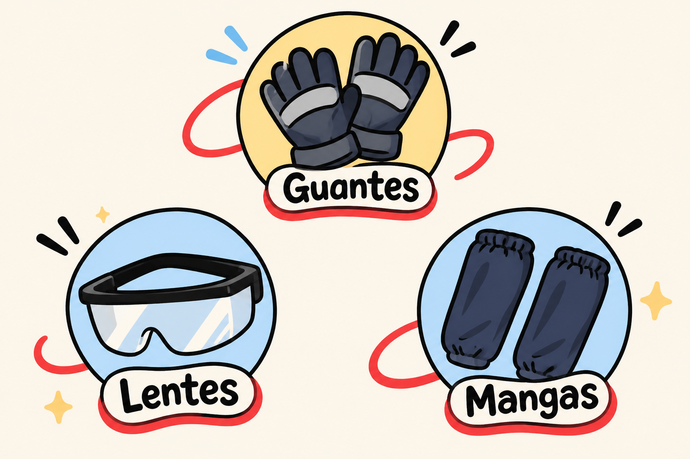

Manual de Seguridad
Normas técnicas y equipos de protección personal (EPP)
Normas técnicas y equipos de protección personal (EPP)
Pensamos en el bienestar y la tranquilidad de tu equipo de trabajo. Operar la roladora requiere la protección adecuada para garantizar jornadas continuas, eficientes y libres de accidentes.
Protegen tus manos contra los bordes filosos de las láminas metálicas durante la carga, ajuste y manipulación del material.
Indispensables para proteger tus ojos en caso de que la lámina pierda estabilidad o se descontrole inesperadamente durante el proceso de curvado.
Evitan raspaduras y cortes accidentales en los antebrazos al maniobrar láminas de gran tamaño cerca de la estructura.

Diseñamos la roladora Rolling Curve para que sea sumamente intuitiva y segura de operar. Siguiendo estas sencillas pautas, proteges tu equipo y extiendes la vida útil de tu máquina.
Verifica que los ejes, piñones y rodamientos estén lubricados. Además, limpia muy bien la lámina metálica antes de trabajarla para eliminar suciedad o residuos que entorpezcan el curvado.
Posiciona la lámina sobre los rodillos inferiores manteniendo la distancia de seguridad recomendada para garantizar un rolado parejo.
Ajusta el rodillo superior mediante la varilla roscada ACME de forma progresiva para no sobrecargar la lámina ni los mecanismos.
En cualquier taller, mantener la calma marca la diferencia. Nuestra cilindradora incorpora topes físicos para prevenir sobrecargas. En caso de alguna eventualidad o si el botón de apagado no responde, mantén la calma, aléjate inmediatamente de la máquina y déjala operar a distancia segura hasta que puedas desconectarla de la corriente o intervenirla de forma totalmente segura.